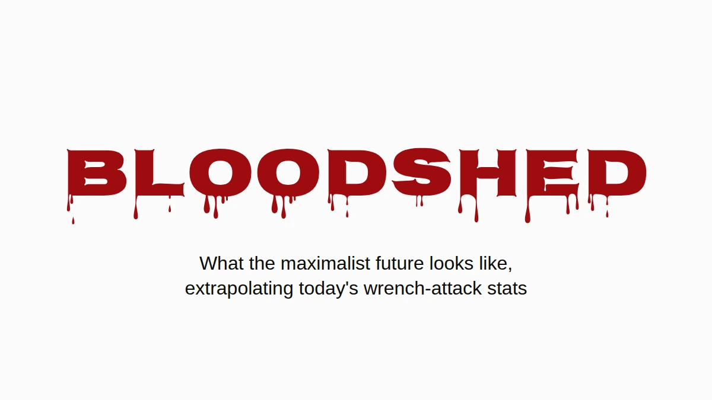

Suppose the maximalists win. Not the price-target version, the real one: bitcoin is where people keep their wealth, and they keep it the way the community tells them to, in their own custody, at home. I'd like that world to exist. So it seems worth asking what it looks like when you run today's wrench attack numbers through it.
The short answer is that England and Wales would end up burying people at about the rate Ukraine buried civilians in 2025, from burglaries that already happen today. The longer answer has caveats, and all of them are below, but none of them makes the problem go away.
One wrench attack in twenty-two
Jameson Lopp keeps a public registry of physical attacks on crypto holders. It's the best record there is, and it's a press-sourced sample, so it misses whatever never made the news. I went through all 351 distinct incidents in it and read every headline that mentioned a death. The keyword search the published figure rests on catches a few wrong rows (a town called Killingly, two attackers shot by police, a killing that was only planned) and misses a few real ones ("beaten to death" doesn't match "killed").
Counted by hand: 16 victims dead in 351 incidents, 4.6%. With a sample this size the honest range is roughly 2.8% to 7.3%. About one wrench attack in twenty-two ends with someone dead.
That's a floor, and not for the usual reason. When a bitcoin holder is murdered, the people who mourn them are very often the people who now hold their keys. Telling the police, or a reporter, that the victim had bitcoin announces that someone in the house has it now. So the killings least likely to be recorded as bitcoin attacks are exactly the ones where the coins survived. Nobody can put a number on how many there are, and that's rather the point. The Denial Spiral goes into why this kind of blind spot doesn't correct itself.
The same silence works on the other side of the fraction, though. Holders who survive an attack have just as much reason not to tell anyone what they held, so the non-fatal cases are undercounted too. Hidden killings push the true share up and hidden survivals push it down, and nobody can say which is bigger. So I take 4.6% at face value, and it holds up whether you read it cautiously or aggressively.
Only when someone's home
Most burglaries aren't wrench attacks. Someone breaks in while you're at work and leaves with the laptop, and in a bitcoin world a seed phrase stamped into a steel plate in the drawer would go the same way. Take the plate, take the coins, nobody gets hurt. In the terms of the Deadly Race, that's a clear success for the thief, with no reason to come back. So leave empty houses out of it entirely.
That still leaves the burglaries where someone is home. They happen now, in large numbers, and in England and Wales they're over half of all domestic burglaries where the burglar gets in. Today the person in the house is an obstacle between a thief and the television. Under the maximalist premise the person in the house is the safe: the wealth is behind a PIN, a passphrase, a memory, and they're standing right there. That's a wrench attack, and wrench attacks end in a death at least one time in twenty-two.
The arithmetic
Take each country's police-recorded home burglaries, keep only the share with someone home, and multiply by 4.6%. No baseline, no conversion of empty houses, nothing assumed about which advice people follow. Just the extra deaths.
![Column chart, extra deaths per 100,000 people a year if today's burglaries of occupied homes were wrench attacks. England and Wales: 6.2, range 3.8 to 9.8. United States: 1.5, range 0.9 to 2.4. Reference band: civilians killed in the war in Ukraine in 2025, 6.6 to 7.6 per 100,000. Conditional extrapolation, not a forecast: police-recorded home burglaries times the share with someone home, times 4.6%, the share of recorded bitcoin wrench attacks that end in a death, from a media-sourced registry. The Ukraine figure counts UN-verified civilian deaths only, no soldiers.](assets/m1-bloodshed.png)
The black lines on the chart, and the range column below, show where each figure lands if the true death share is anywhere from 2.8% to 7.3%.
| Extra deaths per 100,000 a year | Estimate | Range |
|---|---|---|
| England & Wales (half of burglaries with someone home) | 6.2 | 3.8–9.8 |
| United States (28% with someone home) | 1.5 | 0.9–2.4 |
| Ukraine, civilians killed in the war, 2025 | 6.6–7.6 |
England and Wales land in the same range as a country at war: 6.2 extra deaths per 100,000 a year, against 6.6 to 7.6 civilians killed in Ukraine in 2025, the deadliest year for civilians since 2022. The Ukrainian figure is UN-verified civilian deaths only, no soldiers, and the UN says it's well below the real toll. It's the most conservative war number there is.
The US comes out lower, about a quarter of that, mostly because far fewer American burglaries happen with someone home (28%). France and Germany don't publish the share, so they're not on the chart.
Everything here is a conditional extrapolation, not a forecast. I used police-recorded burglaries, which undercount; the crime surveys put the real number considerably higher. The death rate comes from attacks the press chose to report, which probably pushes it up. And the whole thing rests on one assumption, which I'd rather name than hide: that a burglar who finds the holder of a bitcoin fortune at home behaves like a wrench attacker. The registry is 351 cases of what that behavior looks like.
It isn't getting less lethal, either. The share of recorded attacks ending in a death has held at 4–5% across the registry's history (4.1% to 2020, 4.1% for 2021–23, 5.0% since 2024), while the number of attacks per year has roughly doubled. Same odds, more rolls.
Where it's already happening
Everything above is about a future where everyone holds. What follows is about the people who hold now, and it's the same risk seen from the other end: the burglary arithmetic is what this becomes once the whole population is in the denominator.
None of this needs a hypothetical future in France. France has the most entries in the registry, and what sets it apart is the method: 57% of French incidents are kidnappings or hostage-takings by headline, against roughly 35–40% worldwide, and nine of the twelve cases where attackers seized a relative instead of the holder are French.
The national organized-crime prosecutor counted about twenty crypto-related kidnappings or sequestrations in 2024, 67 in 2025, and more than seventy in the first eight months of 2026. Spread across France's five and a half to six million crypto holders (10–11% of adults, by the industry's own surveys, 2025 and 2026), that's about 1.2 per 100,000 holders in 2025 and 1.8 at this year's pace.
Nigeria, tragically infamous for kidnappings, had about 3.4 abductions per 100,000 people in the year to June 2026, by the press count most people cite. Both numbers are reported cases, both are undercounts, and Nigeria's reputation was built on the reported ones too.
So the average French holder is still safer than the average Nigerian. But that average includes everyone with fifty euros in an app, and nobody kidnaps them. Four French holders in five have less than €5,000. Attackers pick visible wealth, so the fair comparison is with the people they pick, and that one can be bounded without guessing anything.
The same survey puts the total French holding at €21–26 billion, and that one number caps every wealth bracket. France can't contain more than about 26,000 people with a million euros or more in crypto, because if there were more, they'd own more than all of it. At half a million the cap is about 52,000; at €100,000, about 262,000. Each cap is absurdly generous, since it leaves nothing at all for the other five and a half million holders, and a larger denominator only makes the rate smaller.
For the numerator I took only the French cases, January 2025 to August 2026, where the press reported how much the victim's household actually had:
- the father of a "crypto millionaire", held for a €5 million ransom and mutilated before police freed him (Paris, May 2025);
- a crypto industry worker robbed of €2 million in bitcoin (Paris, August 2025);
- a retired couple kidnapped for their son's €8 million (Sallanches, January 2026);
- a couple robbed of €900,000 by men posing as police (Le Chesnay, March 2026);
- a family of five held hostage until they transferred €700,000 (Ploudalmézeau, April 2026).
Everyone else is counted as a sardine, including David Balland, the Ledger co-founder taken in January 2025 for a ransom reported at €5–10 million, because what he personally held was never published. Divide, and annualize:
| Crypto held | At most this many in France | Kidnapped, per 100,000 a year, at least | vs Nigeria (3.4) | vs Haiti (5.5) |
|---|---|---|---|---|
| €250,000+ | 105,000 | 2.9 | 0.8× | 0.5× |
| €500,000+ | 52,000 | 5.7 | 1.7× | 1.0× |
| €1 million+ | 26,000 | 6.9 | 2.0× | 1.3× |
| €2 million+ | 13,000 | 9.2 | 2.7× | 1.7× |
| €5 million+ | 5,000 | 11.4 | 3.4× | 2.1× |
![Column chart: French crypto holders, kidnappings per 100,000 a year, at least. All holders 1.8. Households with 250 thousand euros or more in crypto 2.9; 500 thousand or more 5.7; 1 million or more 6.9, with a dashed extension to about 18 marking an estimate if France has its ordinary share of the world's crypto millionaires; 2 million or more 9.2; 5 million or more 11.4. Dashed reference lines: Nigeria 3.4 (press count, 2025 to 2026) and Haiti 5.5 (UN count, 2025). The brackets count only French cases from January 2025 to August 2026 where the press reported what the household held, divided by the most people France could possibly have in each bracket, so every bar is a floor; the top bars rest on one or two cases.](assets/m2-kidnapping-ladder.png)
The rate climbs with every rung, which is what targeting looks like from the outside. From about a third of a million euros up, the floor alone beats Nigeria.
It's a floor built on a ceiling: a handful of the known cases over the largest population the arithmetic allows. Most victims' holdings are never reported at all, so every row is an undercount, and the top rows rest on one or two cases each. Count Balland and the top row doubles.
How loose is the ceiling? Wealth at the top follows a steep power law, which means the real number of French crypto millionaires is far below 26,000, not near it. A less extreme guess: give France its ordinary share of the world's millionaires, a little over 4% (2.4 million of 57.5 million, by UBS), and apply it to the roughly 242,000 crypto millionaires worldwide (Henley & Partners). That's about 10,000 people, and a kidnapping rate for them of about 18 per 100,000 a year, more than five times the Nigerian figure. That one is an estimate, not a floor; the table is the floor.
A French household with half a million euros in crypto is more likely to have someone kidnapped than an ordinary Nigerian, counted the same way Nigeria's reputation is.
Haiti, a tragically collapsed nation, had at least 647 documented kidnappings in 2025 by the UN mission's own case-by-case count, which it calls a minimum: at least 5.5 per 100,000 people. From about a million euros in crypto up, the French floor is higher than that too.
If this year's growth holds, French holders as a whole, sardines included, reach Nigeria's current rate around 2028.
It hasn't slowed down. In September a mother and her son were held at home in Nice by two masked men over a $25,000 account, and a family near Rennes was attacked in August by a crew who had the wrong house.
It changes when it hurts
People don't redesign their security because an argument is good. They do it when the cost of not doing it becomes impossible to ignore. When Coldcard's randomness bug went public, the community's guidance moved within days to rolling fifty dice by hand, a procedure that would have been dismissed as paranoid a month earlier. Effort tolerance isn't fixed. It moves when the threat becomes legible.
The threat here is legible now, at least in France. What the change has to achieve is the criterion from the Deadly Race: after an attacker has you and everything you own, the attack has to clearly end, either because he has it or because there is nothing left for him to get. What it can't do is leave a path that only you can finish, because that path makes you his competitor, and the paper is about what happens to competitors.
Great Wall is one construction built to clear that bar, and the paper explains how. It won't be the last, and it doesn't need to be the one you pick. The maximalist future needs some custody that clears it, or it's going to look a lot like the chart.
The criterion and why a partial seizure prices the holder's life are in The Deadly Race. Why denial, decoys and discretion wear out, and why the record undercounts, is in The Denial Spiral. Both open access, no signup.
Incident data from Jameson Lopp's registry, snapshot of 13 August 2026. Burglary counts: SSMSI (France, 2025), ONS (England & Wales, year to March 2025), FBI (US, 2024), PKS (Germany, 2025). Homicide: SSMSI, ONS, FBI, UNODC. Burglaries with someone home: BJS, ONS. Ukraine: OHCHR 2025. French kidnappings: PNACO. Haiti: BINUH 2025. Nigeria: SBM Intelligence, July 2025 to June 2026. Holders and total held: ADAN/Deloitte/Ipsos 2025, ADAN 2026.
If this was worth your time. Send it to whoever talked you into your current setup. A ⭐ on Great Wall, the research or these posts costs nothing and makes the work easier to find. And if you want to fund it, support takes ⚡ Lightning and on-chain, no signup, no tiers, nothing expected back.